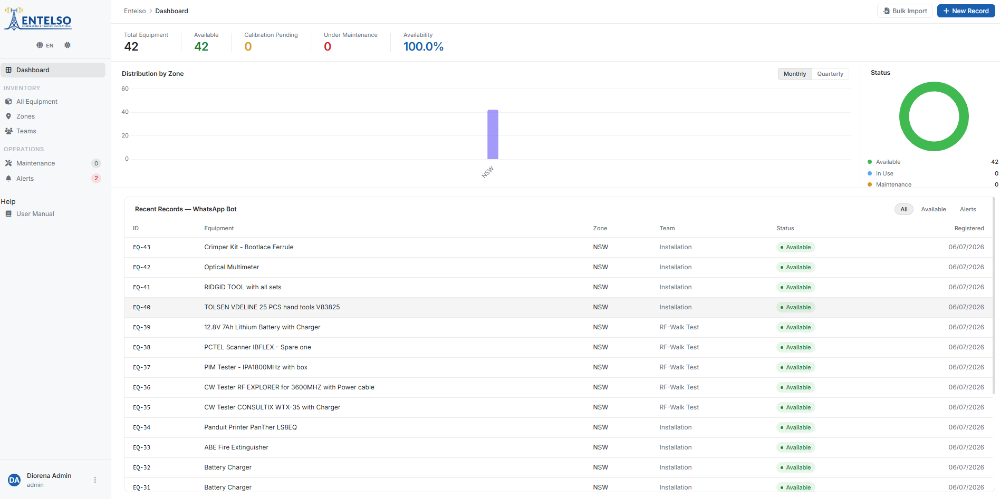
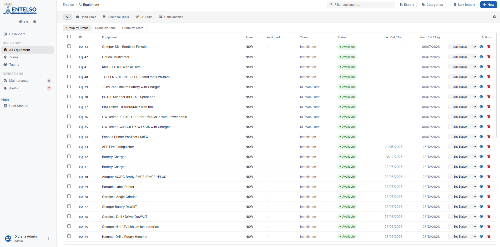
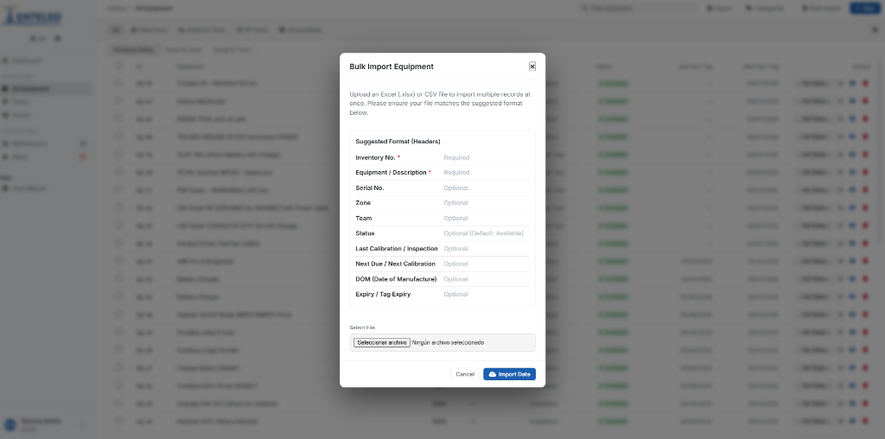
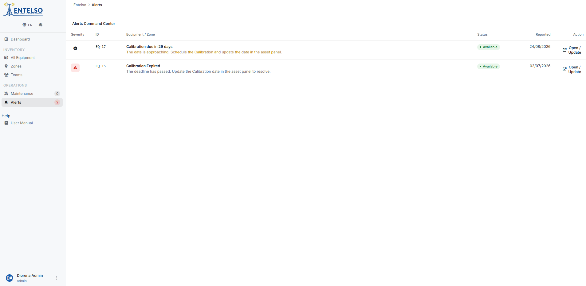
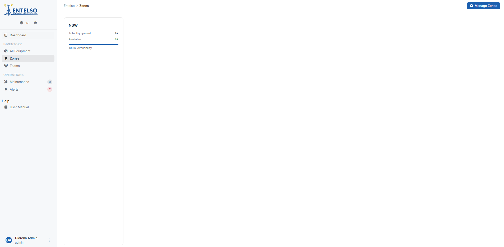
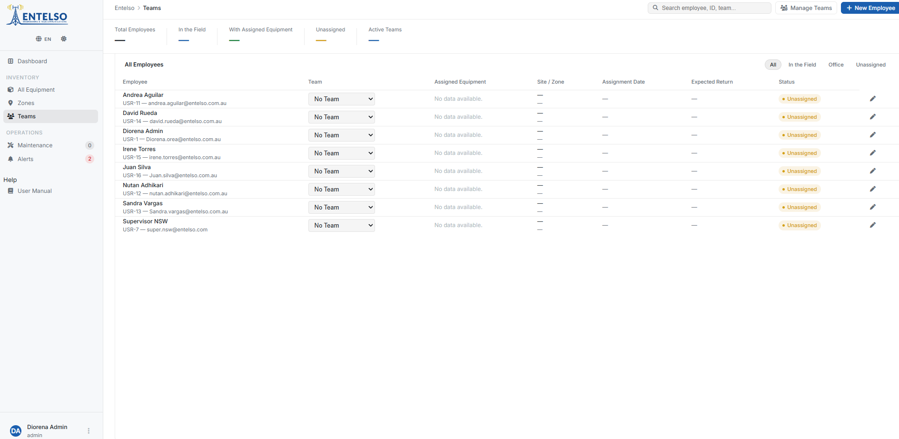
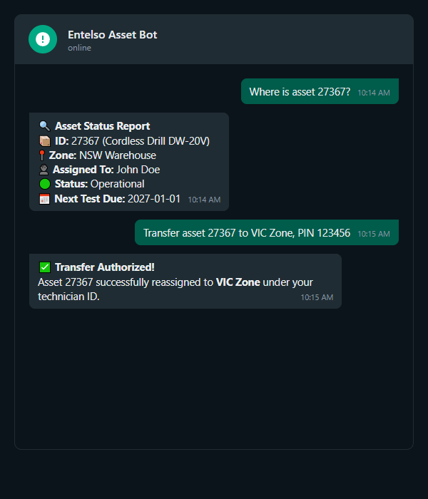
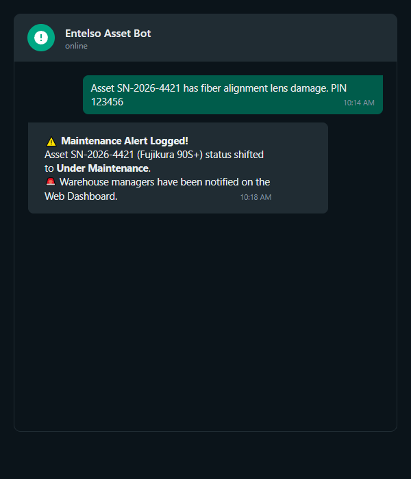

1
Executive KPI Monitoring & Live Analytics
Upon signing into the web dashboard, warehouse supervisors receive an immediate overview of global equipment stock, financial valuation, calibration compliance ratios, and urgent operational alerts. All KPI metrics synchronize dynamically with Supabase to reflect real-time field checkouts.

Figure 1.1: Executive KPI Overview displaying total inventory items, total asset valuation, active field assignments, and maintenance status counters.
Total Valuation Tracking
Automatically calculates aggregate replacement value across all registered assets in USD/CLP, updating instantly upon batch Excel imports.
Calibration Health Index
Monitors the ratio of certified tools versus instruments requiring immediate calibration or vendor recertification.
2
Inventory Grid & Official Category Filtering
The core inventory grid organizes technical assets into 4 official enterprise categories: Hand Tools, Electrical Tools, RF Tools, and Consumables. Supervisors can filter by category, search by serial number or brand, and inspect real-time stock levels and operational status badges.

Figure 1.2: Comprehensive inventory table displaying official category filters, item codes, serial numbers, stock quantities, and assigned zones.
Official 4-Category Taxonomy
Strictly enforces standard categorization: Hand Tools (mechanical wrenches, pliers), Electrical Tools (multimeters, fusion splicers), RF Tools (site masters, spectrum analyzers), and Consumables (connectors, tape).
Real-Time Status Badges
Visual status pills indicate whether equipment is currently Available, checked out via WhatsApp by a field engineer (In Use), or undergoing Maintenance.
3
Bulk Multi-Asset Import & Embedded Excel Photo Extraction
Supervisors can populate or update hundreds of tools in seconds using the Excel Bulk Import utility. The system ingests standard spreadsheets (such as Equipment Register.xlsx), automatically detects embedded cell images, extracts them as clean PNG files, and uploads them directly to Supabase storage.

Figure 1.3: Bulk import modal allowing drag-and-drop spreadsheet ingestion with automated cell photo extraction and serial number mapping.
Pro Tip for Batch Imports: Ensure your Excel spreadsheet contains column headers matching standard Entelso attributes: Item Code, Description, Brand, Model, Serial Number, Category, Quantity, and Price. Embedded images in column 1 or column 11 are automatically mapped to the corresponding asset row.
4
Asset Detailed Audit Drawer & Specification Management
Clicking any equipment row opens the slide-out Audit Drawer. This detailed panel displays high-resolution tool photographs, complete technical specifications, custody transfer histories, calibration certificates, and location coordinates.

Figure 1.4: Slide-out audit drawer revealing full asset metadata, location history, calibration logs, and high-resolution photo attachments.
5
Alert Management & Expiration Tracking
The alert management module monitors equipment health across the enterprise. It highlights tools with overdue calibration certificates, consumable items below minimum stock thresholds, and assets checked out by field engineers beyond their authorized return dates.

Figure 1.5: Dedicated alert tracking interface displaying calibration warning flags, stock deficit alerts, and maintenance reminders.
6
Real-Time Zone & Geolocation Asset Tracking
Entelso operations span multiple geographic regions and field warehouses. The Zones / Field tracking view allows warehouse administrators to monitor equipment distribution across specific operational zones, track custody transfers between field teams, and audit GPS check-in tags generated via WhatsApp Bot.

Figure 1.6: Operational zone tracking view showing asset distribution across regional storage centers and active field locations.
7
Team & Security PIN Management
To ensure strict security and prevent unauthorized equipment checkouts, administrators manage field personnel in the Teams & PIN Management section. Each field engineer is assigned a registered WhatsApp cellular number and a secure 6-digit authentication PIN required for mobile tool checkouts.

Figure 1.7: Team management directory where supervisors register field engineers, assign mobile numbers, and generate secure 6-digit WhatsApp PINs.
6-Digit Security PINs
Encrypts field access. Engineers must input their unique 6-digit PIN when requesting asset transfers via WhatsApp Bot, creating an immutable custody signature.
Custody Audit Trail
Logs every checkout, transfer, and return event against the engineer's profile, providing 100% accountability for high-value RF and electrical instruments.
1
Instant Field Operations via WhatsApp Bot
Field engineers do not require specialized mobile applications or VPN installations to interact with the Entelso inventory system. The official Entelso WhatsApp Bot serves as an intelligent, real-time bridge to the core database, allowing engineers to verify equipment safety, check out tools, report locations, and log maintenance in seconds directly from their mobile phones.
📱 Test the Live WhatsApp Bot Simulator
Experience the exact mobile workflow used by on-site engineers. Practice sending commands, inputting 6-digit security PINs, and querying tool specifications in our interactive sandbox.

Figure 2.1: On-site engineer querying asset status and calibration health by transmitting serial numbers directly to the official Entelso WhatsApp Bot.
2
WhatsApp Command Cheatsheet Table
Engineers communicate with the bot using intuitive hashtag commands or by scanning equipment QR/NFC tags. Below is the official command reference for field operations:
| Command / Action |
Syntax Example |
Operational Function & System Response |
| Status Query |
#STATUS [Serial/Code]
e.g., #STATUS ENT-EL-004 |
Returns real-time equipment availability, calibration expiry date, current assigned zone, and technical specifications. |
| Asset Checkout |
#CHECKOUT [Code] [PIN]
e.g., #CHECKOUT ENT-RF-001 849201 |
Assigns custody of the tool to the engineer's profile, timestamps checkout date, and updates dashboard status to In Use. |
| Custody Return |
#RETURN [Code] [PIN]
e.g., #RETURN ENT-RF-001 849201 |
Releases tool custody, marks item as available in warehouse, and prompts for optional condition feedback. |
| Zone Transfer |
#TRANSFER [Code] [Zone] [PIN]
e.g., #TRANSFER ENT-004 ZONA-NORTH 849201 |
Transfers tool custody directly between regional zones or field sites without requiring a return to base warehouse. |
| QR / NFC Scanning |
Scan physical asset tag |
Automatically inputs asset serial code into WhatsApp chat and displays interactive checkout/return action buttons. |
| Maintenance Report |
#REPORT [Code] [Issue]
e.g., #REPORT ENT-004 Screen cracked |
Opens an immediate maintenance ticket, alerts warehouse supervisors on web dashboard, and requests photo attachment. |
3
Security PIN & Custody Verification
Every asset checkout or transfer requires 2-factor authentication via the engineer's registered mobile number and their assigned 6-digit Security PIN. This prevents unauthorized checkouts and ensures an auditable chain of custody for valuable instrumentation.
PIN Verification Protocol
If an invalid PIN is entered 3 consecutive times, the bot temporarily locks field checkouts for that cellular number and notifies the warehouse supervisor.
Automated Geolocation Tagging
When executing field transfers, the bot prompts engineers to share their WhatsApp GPS location to verify physical tool presence at the job site.
4
Maintenance Incident Logging & Photo Attachments
If an engineer discovers equipment damage, calibration drift, or wear in the field, they can file an instant incident report via WhatsApp Bot. Attaching photos directly in the chat embeds the images into the dashboard audit drawer for supervisor review.

Figure 2.2: Engineer submitting a field maintenance report with photographic evidence of instrument wear directly through WhatsApp Bot.